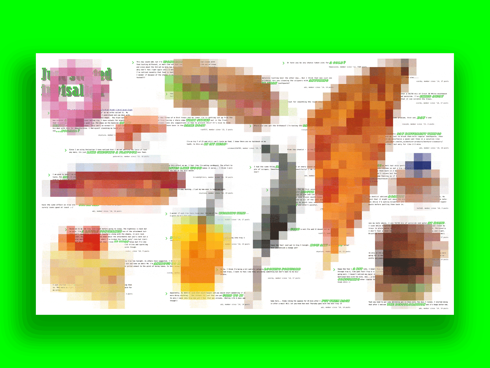

A collection of forum posts exploring dulled taste, juxtaposed against pixelations of 'perfect' food eaten at restaurants around the world pre-pandemic.
...
The curated dining-out experience has disappeared during the pandemic. Hot becomes cold, crispy becomes soggy—thanks to delivery & takeout. A forum topic about dental appliances causing taste changes evokes a similar sentiment to this. Our memories of perfect food have become distant, blurred memories; meanwhile, our clearly tasted food has become sad (perhaps affected by the virus) & many times, unenjoyable. In the concept interface, follow the trail of conversations to further understand people's experiences with changed taste, or take matters into your own hands to create a poem from the green text by hiding or showing things, courtesy of the moveable food items and button which hides black text.


animated digital poster
interface (concept)
The curated dining-out experience has disappeared during the pandemic. Hot becomes cold, crispy becomes soggy—thanks to delivery & takeout. A forum topic about dental appliances causing taste changes evokes a similar sentiment to this. Our memories of perfect food have become distant, blurred memories; meanwhile, our clearly tasted food has become sad & many times, unenjoyable. Follow the trail of conversations to further understand people's experiences with changed taste, or take matters into your own hands and create a poem from the green text by hiding or showing things, courtesy of the moveable food items and button which hides black text.